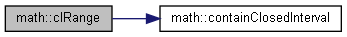
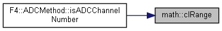
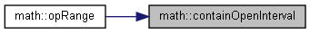
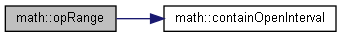

数学関数（笑） More...
Functions | |
| template<class T > | |
| constexpr int32_t | sign (const T &x) |
| 数値の符号を返す More... | |
| template<class T > | |
| constexpr bool | containClosedInterval (const T &l, const T &x, const T &u) |
| 数値が閉区間内にあるか調べる More... | |
| template<class T > | |
| constexpr bool | clRange (const T &l, const T &x, const T &u) |
| containClosedIntervalの無理やりエイリアス More... | |
| template<class T > | |
| constexpr bool | containOpenInterval (const T &l, const T &x, const T &u) |
| template<class T > | |
| constexpr bool | opRange (const T &l, const T &x, const T &u) |
| containOpenIntervalの無理やりエイリアス More... | |
| template<class T > | |
| constexpr T | clamp (const T &x, const T &b) |
| 値を範囲内に収める More... | |
| template<class T > | |
| constexpr auto | sq (const T &x) -> decltype(x *x) |
| 値の2乗を計算する More... | |
| constexpr float | radToDeg (float x) |
| 弧度法から度数法への変換 More... | |
| constexpr float | degToRad (float x) |
| 度数法から弧度法への変換 More... | |
Variables | |
| constexpr float | PI = 3.1415926535897932f |
| 円周率 More... | |
| constexpr float | PI2 = PI * 2 |
| 円周率の2倍 頻出する？ので More... | |
Detailed Description
数学関数（笑）
数字に関するやつ
- Note
- 名前numとかのほうがよかったかな
Function Documentation
◆ clamp()
template<class T >
|
constexpr |

◆ clRange()
template<class T >
|
constexpr |
containClosedIntervalの無理やりエイリアス
- See also
- containClosedInterval
Definition at line 55 of file math.hpp.
Here is the call graph for this function:

Here is the caller graph for this function:

◆ containClosedInterval()
template<class T >
|
constexpr |
数値が閉区間内にあるか調べる
- Parameters
-
l 下の端点 x 調べる数値 u 上の端点
- Returns
- [l,u] に x が含まれるか
- See also
- containOpenInterval
- std::clamp
Definition at line 47 of file math.hpp.
Here is the caller graph for this function:

◆ containOpenInterval()
template<class T >
|
constexpr |
数値が開区間内にあるか調べる
- Parameters
-
l 下の端点 x 調べる数値 u 上の端点
- Returns
- (l,u) に x が含まれるか
- See also
- containClosedInterval
- std::clamp
Definition at line 69 of file math.hpp.
Here is the caller graph for this function:

◆ degToRad()
|
constexpr |
◆ opRange()
template<class T >
|
constexpr |
containOpenIntervalの無理やりエイリアス
- See also
- containOpenInterval
Definition at line 77 of file math.hpp.
Here is the call graph for this function:

◆ radToDeg()
|
constexpr |
◆ sign()
template<class T >
|
constexpr |
◆ sq()
template<class T >
|
constexpr |
Variable Documentation
◆ PI
|
constexpr |